import altair as alt
from vega_datasets import data as vega_data
alt.renderers.enable('png')RendererRegistry.enable('png')We will be visualizing global health and population data for a number of countries, over the time period of 1955 to 2005.
The data was collected by the Gapminder Foundation and shared in Hans Rosling’s fantastic TED talk.
If you haven’t seen the talk, we encourage you to watch it first!
Roadmap: load data and review first five rows
Let’s first load the dataset from the vega-datasets collection into a Pandas data frame.
import altair as alt
from vega_datasets import data as vega_data
alt.renderers.enable('png')RendererRegistry.enable('png')data = vega_data.gapminder()data.shape(682, 6)head() + summarydata.head(5)| year | country | cluster | pop | life_expect | fertility | |
|---|---|---|---|---|---|---|
| 0 | 1955 | Afghanistan | 0 | 7971931 | 43.88 | 7.42 |
| 1 | 1960 | Afghanistan | 0 | 8622466 | 45.03 | 7.38 |
| 2 | 1965 | Afghanistan | 0 | 9565147 | 46.13 | 7.35 |
| 3 | 1970 | Afghanistan | 0 | 10752971 | 47.08 | 7.40 |
| 4 | 1975 | Afghanistan | 0 | 12157386 | 47.55 | 7.54 |
For each country and year (in 5-year intervals), we have
fertility) life_expect) pop) cluster – what might this represent? We’ll try and solve this mystery as we visualize the data!Pandas data frames come with types. When loading data not from pandas, explicitly name:
'N' indicates a nominal type (unordered, categorical data),'O' indicates an ordinal type (rank-ordered data),'Q' indicates a quantitative type (numerical data with meaningful magnitudes), and'T' indicates a temporal type (date/time data)country field is Nominal.size channel to encode nominal data might mislead us, suggesting rank-order or magnitude differences among values that do not exist!year field as Ordinal.year is a quantitative interval field (depending on whose history of the world you prefer, there are many choices for the year “zero”), whereas fertility and life_expect are quantitative ratio fields (zero is meaningful for calculating proportions). 
“2019-01-04” and “Jan 04 2019”, as well as standardized date-times such as the ISO date-time format: “2019-01-04T17:50:35.643Z”.year field is simply encoded as an integer.What are examples of variables that are
NominalOrdinalQuantitativeLet’s try to come up with at least three examples of each. For each example, state the comparison in a sentence.
Suppose we have a dataset of ages (10 years old, 20 years old, 10 years old, 30 years old). What would it mean for these data to be
NominalOrdinalQuantitativeWhat comparisons are feasible with each data type?
seattle = vega_data.seattle_weather()
alt.Chart(seattle).mark_bar().encode(
x = 'month(date):O',
y = 'average(precipitation):Q'
)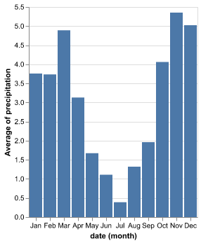
What happens when…
precipitation ordinaldate temporal. There’s a consequential but subtle change relative to the original plot. What is it?seattle = vega_data.seattle_weather()
alt.Chart(seattle).mark_bar().encode(
x = 'month(date):O',
y = 'average(precipitation):O'
)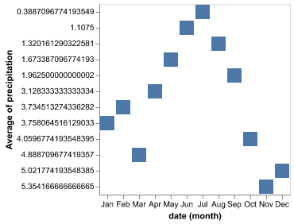
seattle = vega_data.seattle_weather()
alt.Chart(seattle).mark_bar().encode(
x = 'month(date):T',
y = 'average(precipitation):Q'
)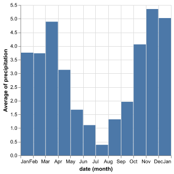
Answer:
month(date) is Ordinal we had a bar graph with 12 categories. The label is in the middle of each bar.month(date) is Trdinal we had a bar graph which marks dates for the beginning of each month. The labels are at the tick marks. We have 13 labels because we also pick up an extra “Jan” at the endA single data series can have multiple meanings depending on data type
'N' indicates a nominal type (unordered, categorical data),'O' indicates an ordinal type (rank-ordered data),'Q' indicates a quantitative type (numerical data with meaningful magnitudes), and'T' indicates a temporal type (date/time data)Explicitly specify the data type so that Altair/Vega know how to interpret it. If you don’t specify a data type (as was the case in Lecture 1), Vega will guess. This can lead to undesired results!

Source: Jacques Bertin in Semiology of Graphics (1967), via source
Free advice: don’t try to use all seven ways of encoding information in a single plot. It will inevitably be overload.
Language note: by color, we mean both brightness (which Bertin calls “value”) and hue (which Bertin calls “color”)
Why choose color deliberately?
Toggle back and forth to the schemes page:
step 1 Am I working with Nominal, unordered data or with ordered data (either Ordinal or Quantitative)?
If Nominal, unordered data, use categorical palettes. Otherwise, proceed.
step 2
| Palette type | Use case |
|---|---|
| Sequential Single-Hue | |
| Sequential Multi-Hue | Use for higher contrast, but harder to judge quantitative proximity |
| Diverging | Use if there is a midpoint (e.g. voting for redblue) |
| Cyclical | Use if circular (e.g. time of day, month) |
We now are going to learn how to implement Bertin’s vision in Altair.
xysizecoloropacitycolumnrowdata2000 = data.loc[data['year'] == 2000] #one year is more manageable
alt.Chart(data2000).mark_point().encode(
alt.X('fertility:Q')
)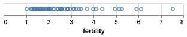
alt.Chart(data2000).mark_point().encode(
alt.X('fertility:Q'),
alt.Y('cluster:O')
)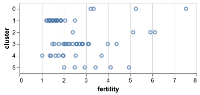
zero_included = alt.Chart(data2000).mark_point().encode(
alt.X('fertility:Q'),
alt.Y('life_expect:Q')
)
zero_excluded = alt.Chart(data2000).mark_point().encode(
alt.X('fertility:Q', scale=alt.Scale(zero=False)),
alt.Y('life_expect:Q', scale=alt.Scale(zero=False))
)
zero_included | zero_excluded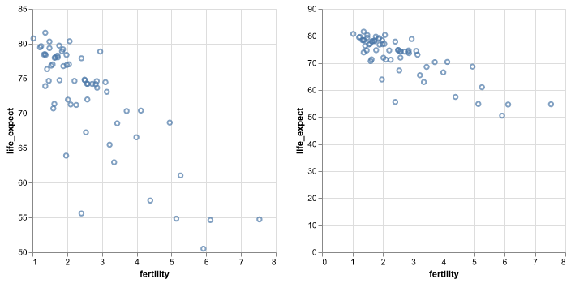
Discussion question: which plot do you prefer (and why?)
sizealt.Chart(data2000).mark_point().encode(
alt.X('fertility:Q'),
alt.Y('life_expect:Q'),
alt.Size('pop:Q')
)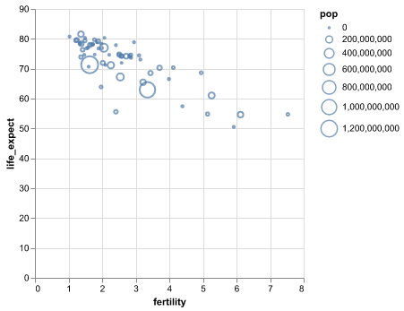
color and size with filled=True and range=[0,1000]alt.Chart(data2000).mark_point(filled=True).encode(
alt.X('fertility:Q'),
alt.Y('life_expect:Q'),
alt.Size('pop:Q', scale=alt.Scale(range=[0,1000])),
alt.Color('cluster:N')
)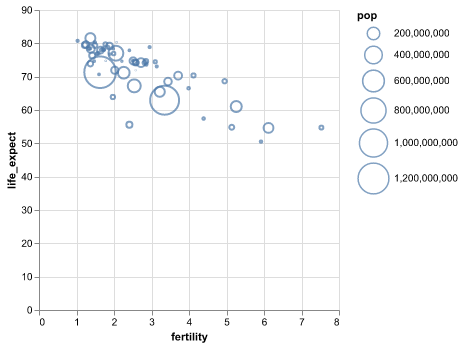
opacityalt.Chart(data2000).mark_point(filled=True).encode(
alt.X('fertility:Q'),
alt.Y('life_expect:Q'),
alt.Size('pop:Q', scale=alt.Scale(range=[0,1000])),
alt.Color('cluster:N'),
alt.OpacityValue(0.5)
)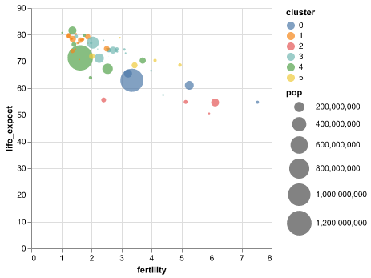
columnalt.Chart(data2000).mark_point(filled=True).encode(
alt.X('fertility:Q'),
alt.Y('life_expect:Q'),
alt.Size('pop:Q', scale=alt.Scale(range=[0,1000])),
alt.Color('cluster:N'),
alt.OpacityValue(0.5),
alt.Tooltip('country:N'),
alt.Column('cluster:N')
)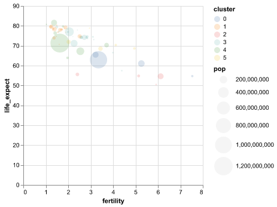
alt.Chart(data2000).mark_point(filled=True).encode(
alt.X('fertility:Q'),
alt.Y('life_expect:Q'),
alt.Size('pop:Q', scale=alt.Scale(range=[0,1000]),
legend=alt.Legend(orient='bottom', titleOrient='left')),
alt.Color('cluster:N', legend=None),
alt.OpacityValue(0.5),
alt.Tooltip('country:N'),
alt.Column('cluster:N')
).properties(width=135, height=135)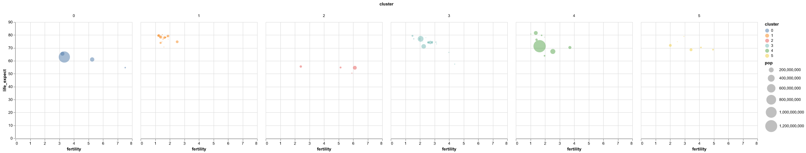
The plot faceted by column doesn’t fit on the page. Redo it instead faceted by row.
Bonus: It still looks bad. What further change is needed?
Row for Columnorient='bottom'alt.Chart(data2000).mark_point(filled=True).encode(
alt.X('fertility:Q'),
alt.Y('life_expect:Q'),
alt.Size('pop:Q', scale=alt.Scale(range=[0,1000]),
legend=alt.Legend(titleOrient='left')),
alt.Color('cluster:N', legend=None),
alt.OpacityValue(0.5),
alt.Tooltip('country:N'),
alt.Row('cluster:N')
).properties(width=135, height=135)
x: Horizontal (x-axis) position of the mark.y: Vertical (y-axis) position of the mark.size: Size of the mark. May correspond to area or length, depending on the mark type.color: Mark color, specified as a legal CSS color.opacity: Mark opacity, ranging from 0 (fully transparent) to 1 (fully opaque)column: Facet the data into horizontally-aligned subplots.row: Facet the data into vertically-aligned subplots.Prior section used only mark_point(). Now will cover
mark_point()
mark_square()mark_tick()mark_bar()mark_line()mark_area()Warning: there are a ton of slides in this section. But each slide is simple. focus is on software.
mark_point(): add information using alt.Shape()alt.Chart(data2000).mark_point().encode(
alt.X('fertility:Q'),
alt.Y('life_expect:Q', scale=alt.Scale(zero=False)),
alt.Shape('cluster:N')
)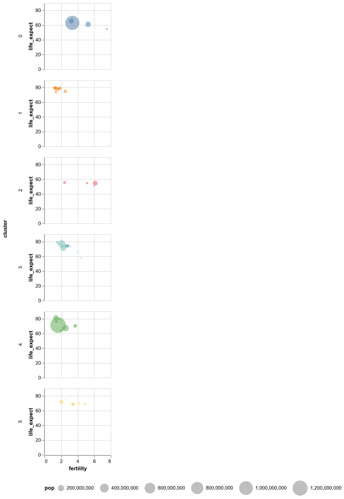
mark_point(): format points using argumentsalt.Chart(data2000).mark_point(filled=True, size=100).encode(
alt.X('fertility:Q'),
alt.Y('life_expect:Q', scale=alt.Scale(zero=False)),
alt.Shape('cluster:N')
)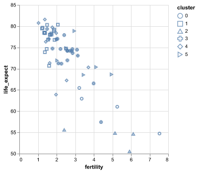
mark_square()alt.Chart(data2000).mark_square(size=100).encode(
alt.X('fertility:Q'),
alt.Y('life_expect:Q', scale=alt.Scale(zero=False)),
alt.Shape('cluster:N')
)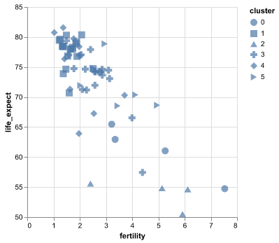
mark_tick()alt.Chart(data2000).mark_tick().encode(
alt.X('fertility:Q'),
alt.Y('cluster:N')
)mark_bar()You know how to do this already! This is just a prelude to the next slide.
alt.Chart(data2000).mark_bar().encode(
alt.X('country:N'),
alt.Y('pop:Q')
)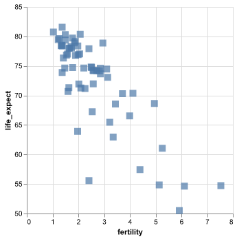
alt.Color() for a stacked bar plotalt.Chart(data2000).mark_bar().encode(
alt.X('cluster:N'),
alt.Y('pop:Q'),
alt.Color('country:N', legend=None)
)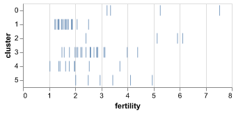
Note: if we had instead set alt.Y('pop:Q', stack=None), bars would have been overlapped with each other
X2() to show intervalsalt.Chart(data2000).mark_bar().encode(
alt.X('min(life_expect):Q'),
alt.X2('max(life_expect):Q'),
alt.Y('cluster:N')
)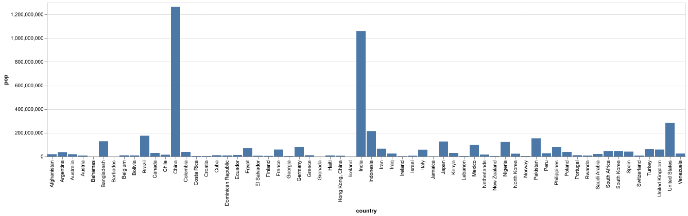
mark_line()data_c2 = data.loc[data['cluster'] == 2] #one cluster is more manageable
alt.Chart(data_c2).mark_line().encode(
alt.X('year:O'),
alt.Y('fertility:Q'),
alt.Color('country:N')
).properties(
width=400
)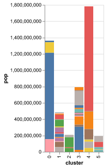
alt.Chart(data).mark_line().encode(
alt.X('year:O'),
alt.Y('fertility:Q'),
alt.Color('country:N', legend=None),
alt.Tooltip('country:N')
).properties(
width=400
)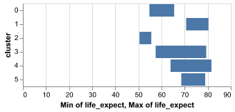
mark_line() with cosmetic adjustmentsalt.Chart(data_c2).mark_line(
strokeWidth=3,
opacity=0.5,
interpolate='monotone'
).encode(
alt.X('year:O'),
alt.Y('fertility:Q'),
alt.Color('country:N')
).properties(
width=400
)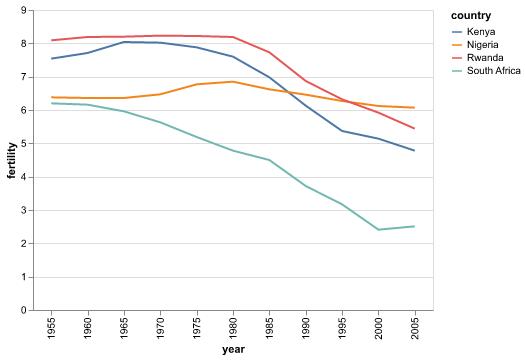
mark_line() with cosmetic adjustmentsdata_c2_2y = data_c2[data_c2['year'].isin([1955, 2005])]
alt.Chart(data_c2_2y).mark_line().encode(
alt.X('year:O'),
alt.Y('fertility:Q'),
alt.Color('country:N')
).properties(
width=400
)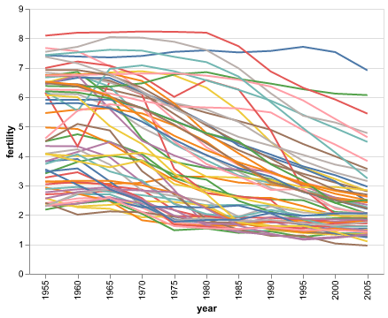
mark_area()dataUS = data.loc[data['country'] == 'United States']
alt.Chart(dataUS).mark_area().encode(
alt.X('year:O'),
alt.Y('fertility:Q')
)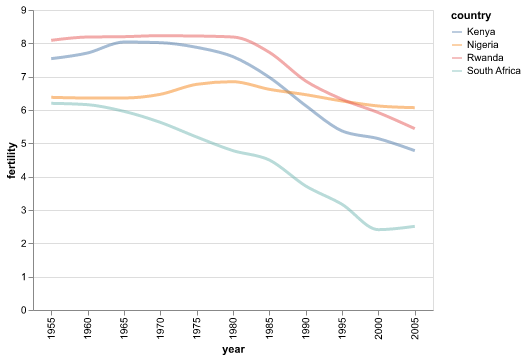
mark_area() with stackingdataNA = data[data['country'].isin(['United States', 'Mexico', 'Canada'])]
alt.Chart(dataNA).mark_area().encode(
alt.X('year:O'),
alt.Y('pop:Q'),
alt.Color('country:N')
)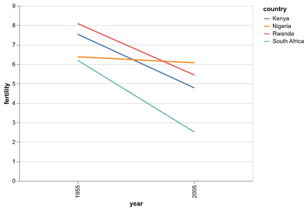
mark_area() with no stacking and opacityalt.Chart(dataNA).mark_area(opacity=0.5).encode(
alt.X('year:O'),
alt.Y('pop:Q', stack=None),
alt.Color('country:N')
)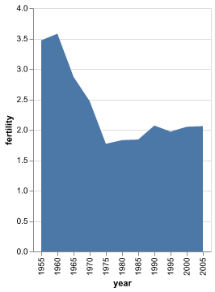
mark_area() to show rangealt.Chart(dataNA).mark_area().encode(
alt.X('year:O'),
alt.Y('min(fertility):Q'),
alt.Y2('max(fertility):Q')
).properties(
width={"step": 40}
)We can see a larger range of values in 1995, from just under 4 to just under 7. By 2005, both the overall fertility values and the variability have declined, centered around 2 children per familty.
mark_area() swap axesalt.Chart(dataNA).mark_area().encode(
alt.Y('year:O'),
alt.X('min(fertility):Q'),
alt.X2('max(fertility):Q')
).properties(
width={"step": 40}
)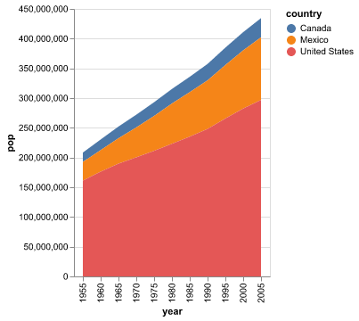
Covered today
mark_point() - Scatter plot points with configurable shapes.
mark_circle() - Scatter plot points as filled circles.mark_square() - Scatter plot points as filled squares.mark_tick() - Vertical or horizontal tick marks.mark_bar() - Rectangular bars.mark_line() - Connected line segments.mark_area() - Filled areas defined by a top-line and a baseline.Not covered in lecture
mark_rect() - Filled rectangles, useful for heatmaps.mark_rule() - Vertical or horizontal lines spanning the axis.mark_text() - Scatter plot points represented by text.For a complete list, and links to examples, see the Altair marks documentation.